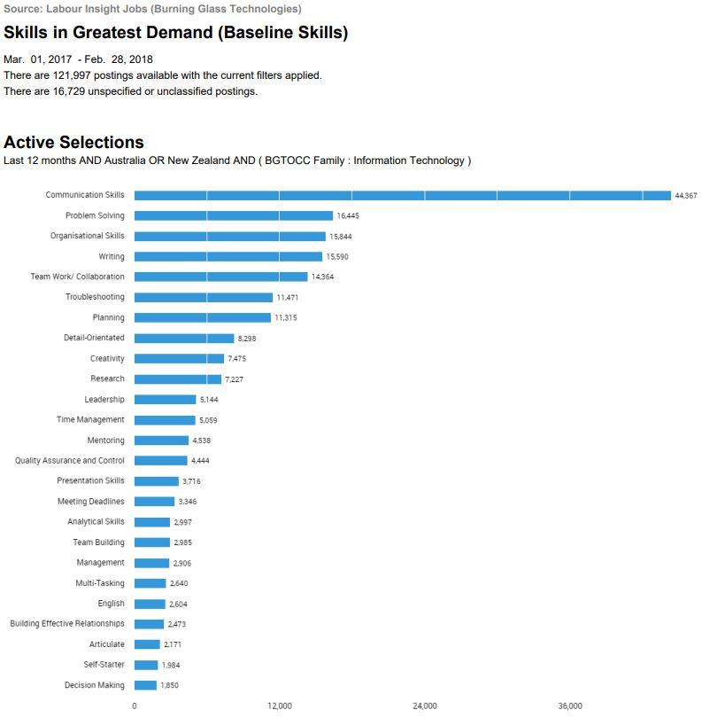

- Senior Network Security Engineer Ranks up in the top 10 in demand for top IT job titles
- Manufacturing Engineer Ranks in the top 10 of manufacturing jobs in the Aerospace/Bio fields
- Head of IT Manager Leadership roles are in high demand
- WEB Developer Ranks up into the top 20 in demand job titles in Information Technology
Burning Glass Data


Groups Required skill set
Base skills - Communication skills, Problem solving, organization skills and writing.
IT skills - Project management, Building relationships and website production
How do the IT-specific skills in your required skill set rank in terms of demand from employers?
- Project Management ranks is 5th top skill
- Building Relationships is the top 8th skill
- Website Production makes the top 18th skill
How do the general skills in your required skill set rank in terms of demand from employers?
- Communication Skills rates in Number 1 position above all other skillsets
- Problem Solving comes in 2nd most popular skills in demand
- Organization Skills makes the 3rd top skill in high demand
- Writing comes in at 4th top skill high in demand
What are the three highest ranked IT-specific skills which are not in your required skill set?
- SQL is the most popular skill at position 1
- JavaScript is the 2nd most popular skill in demand
- Java comes in at 3rd position in demand from employers
What are the three highest ranked general skills which are not in your required skill set?
- Team work / Collaboration
- Troubleshooting
- Planning
Having looked at the Burning Glass data, has your opinion of your ideal job changed? Why or why not?
- As a Future Network Security Engineer reading up on the other IT jobs and skillsets my choice on job role is the same as before, unless I'm offered an opportunity I could not refuse.
- Manufacturing Engineer in areo-space/bio is my ideal position (can't find the perfect combination). The more I manufacture the more I want to build things for the future. Manufacturing is one of the places that I feel home, and it challenges me every day. This SpaceX position is something that is achievable. I have a lot of experience in similar things so I would like to stick to this being my ideal job. Perhaps not in America, I have never wanted to live there... never say never! Working in manufacturing I have seen a huge shift towards space manufacturing. The companies that I worked for develop and test a lot in space gathering that information and use it to create better products. The more we visit space the more we learn about its benefits and understand how easy it is to manufacture there without having the restraints of Earth. Not just to develop and test things for earth, but to create a place to extract resources close to where we build in space. This is very viable and most big companies are investing massive amounts of money in establishing manufacturing bases in space to some capacity or another. The bio part comes into manufacturing because in space things are different and it changes the way we do things, including manufacturing. It is not big right now, but I imagine there being areas created for this as we adjust to our new environment. I do not really have too many “why not” answers because I wouldn’t consider even doing a job I didn’t like in the first place.
- Head of IT Manager is my goal and will take all the necessary steps to get to my Ideal job
- WEB Developer is my chosen ideal job I haven't changed my mind as of yet